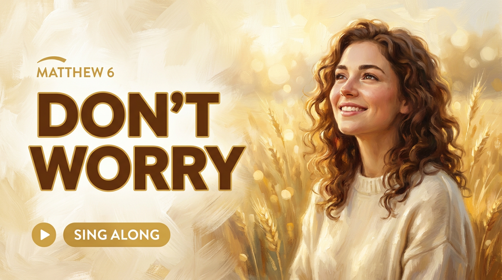
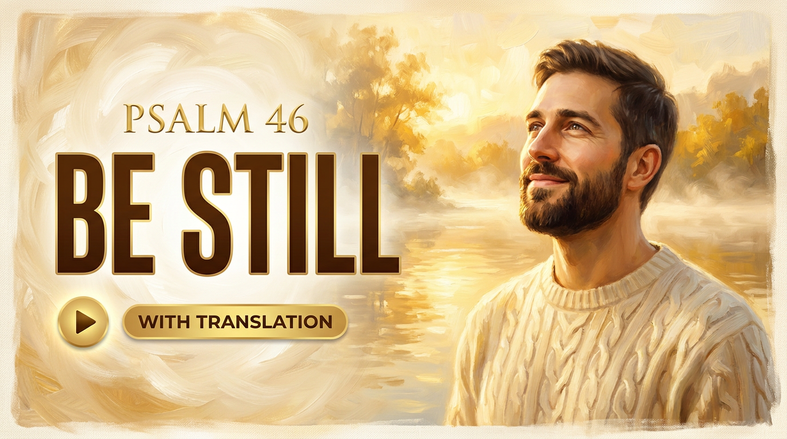

Komplettes Kanal-Launch-Kit zum Sektion-für-Sektion-Durchgehen (Nav unten): Name, Logos, Profilbild,
3 Banner, 3 Thumbnails, ein fertiges Video-Beschreibungs-Skript für „The Sower" (Interpretation,
Bibelstellen-Links, Kapitel, Hashtags) und ein Launch-Playbook auf Basis aktueller Erkenntnisse.
Code-Mockup (Vektor-Logos + deine gemalten Bilder); Favoriten holen wir danach als echte KI-Bilder nach.
Export: Jeder Banner/Thumbnail hat „1:1" (echte Pixel zum Screenshot) und
„PNG". Unter file:// blockt der Browser den PNG-Export oft (lokale Bilder) — dann auf 1:1
stellen und einen Screenshot machen, oder die Seite über einen lokalen Server öffnen. Banner = 2560×1440,
Thumbnail = 1280×720.
Kanalname
EN-first, global · finaler Vorschlag + Shortlist
Draw Near
Sung Scripture that draws you near
@drawnear@drawnearsongs@drawnearmusic
Voller Kanaltitel: Draw Near — Bible Songs. Handle vor der Anmeldung auf
Verfügbarkeit prüfen (youtube.com/@drawnear). „Marten's Songs" bleibt die Studio-Signatur:
Website + „by Marten's Songs" im Kanal-About. Quelle des Namens: „Naht euch zu Gott, so naht er
sich zu euch" (Jakobus 4,8) - genau das Kanalversprechen.
Draw Near
Cormorant Garamond · primär (elegant, sakral)
DRAW NEAR
Inter 800 · modern, für UI/Web
DRAW NEAR
Anton · laut, für Thumbnails
Shortlist (Alternativen)
Empfehlung
Draw Near
„Naht euch zu Gott, so naht er sich zu euch" (Jak 4,8). Ist das Kanalversprechen, einladend,
trägt als Wortmarke, Konzept übersetzt sich (DE „Komm näher", ES „Acércate").
Voller Titel: Draw Near — Bible Songs · Handle @drawnear.
Selah
Psalmen-Musikwort. Schönste Einzelmarke, aber im Worship-Markt belegt (SEO prüfen).
Abide
„Bleibt in mir" (Joh 15). Ruhig, ein Wort; klingt etwas nach Meditations-App.
Nearer
„Nearer, My God, to Thee". Emotional, richtungsweisend; als Suchbegriff schwach.
Lamplight
„Dein Wort ist meines Fußes Leuchte" (Ps 119,105). Passt zum Gold-Licht-Look.
Still Waters
„Er führt mich zum frischen Wasser" (Ps 23). Ruhe; zwei Wörter, etwas generisch.
Sing the Word
Beschreibt das Produkt sofort; weniger Marke, mehr Label.
Tool: erstellt mit Gemini 3 Pro Image („Nano Banana Pro“) – unser Generator
tools/images/generate-image.js, Key in API keys/Nano-Banana-Google.txt.
Genau dieser Stil bleibt, nur andere Personen. Die 3 OpenAI-Versuche sind gelöscht. Geld/Limit aufheben: in aistudio.google.com (oder Google-Cloud-Console) beim Projekt dieses Keys
Billing aktivieren (Kreditkarte). Dann kein Tageslimit, ~10–13c/Bild. Sonst setzt sich das
Gratis-Tageslimit jeden Tag zurück. Alternativen: fal.ai (FLUX) – tolle Bilder, schwach bei Text;
OpenAI/gpt-image – anderer Look (war „crap“).
→ alle alten Versionen ansehen. Nächster Schritt: sobald
das Gemini-Limit frei ist (Billing oder täglicher Reset), generiere ich neue im EXAKT gleichen Golden-Oil-Stil
mit verschiedenen Personen.
Neu · 3 Themen, 3 Personen (Golden Oil, über fal)
Voll von der KI komponiert (Bild + Text), je anderes Thema + andere Person, exakt im s1-Stil — über fal.ai Nano Banana Pro (kein Google-Limit, ~15c/Bild).

Don't Worry · Matthew 6

Be Still · Psalm 46Do Not Fear · Isaiah 41:10
Video-Beschreibung · fertiges Skript
„The Sower" zum Kopieren · Vorlage · Pinned Comment
Komplette Beschreibung · „The Sower"
Don't worry. Seek first the kingdom. The Sower is a Bible song from the Gospels, sung word by word in English, with the worry of Matthew 6 turning slowly into peace.
This is "sung Scripture": the lyrics light up line by line like karaoke, a translation sits underneath (Español / Deutsch), and painted scenes drift behind every verse. Watch the words, follow the meaning, and let it draw you near.
▶ THE IDEA BEHIND THE SONG
The Sower weaves three of Jesus' teachings into one arc. It opens with the Parable of the Sower (Matthew 13): the same seed, the good news, falls on four kinds of ground, and what matters is how deeply it takes root in you. The chorus turns to Matthew 6: don't worry, look at the birds and the lilies, seek first the kingdom and the rest will follow. The bridge arrives at the heart of it, John 3:16: so great was his love that he gave his only Son. It ends in quiet trust, the seed in you rising on good and solid ground.
▶ SCRIPTURE IN THIS SONG
• The Parable of the Sower — Matthew 13:3-23
• Do not worry / seek first the kingdom — Matthew 6:25-33
• Ask, seek, knock — Matthew 7:7
• The lilies of the field — Matthew 6:27-29
• For God so loved the world — John 3:16
▶ CHAPTERS
0:00 Intro
0:09 Verse 1 — The Parable of the Sower (Matthew 13)
0:43 Chorus — Don't Worry, Seek First the Kingdom (Matthew 6)
1:13 Verse 2 — Worry Adds Nothing, the Lilies (Matthew 6)
1:35 Chorus
2:02 Bridge — The Gift (Matthew 7 & John 3:16)
2:24 Outro — The Seed in You Is Rising
▶ SING IT ANYWHERE
Play it at home, on the road, or whenever you want to feel him near. The full interactive version (bilingual lyrics + the idea behind the song) lives here:
→ The Sower (interactive): https://martennwt.github.io/marten-songs/songs/the-sower/index.html
→ All songs: https://martennwt.github.io/marten-songs/
▶ LINKS
Subscribe: https://youtube.com/@drawnear
Playlist — Bible Songs: [Playlist-Link einsetzen]
Website: https://martennwt.github.io/marten-songs/
▶ READ THE SCRIPTURE
Matthew 13: https://www.biblegateway.com/passage/?search=Matthew+13
Matthew 6: https://www.biblegateway.com/passage/?search=Matthew+6
Matthew 7:7: https://www.biblegateway.com/passage/?search=Matthew+7:7
John 3:16: https://www.biblegateway.com/passage/?search=John+3:16
Music and visuals are AI-created; the words are drawn from the Gospels.
#BibleSongs #TheSower #Matthew6 #ChristianMusic #LyricVideo #DontWorry #SungScripture #Faith #Worship
Wiederverwendbare Vorlage (jeder Song)
[HOOK: ein Versprechen + das Keyword "Bible song", unter ~120 Zeichen, damit es vor "Mehr ansehen" steht]
This is "sung Scripture": {ein Satz, was es ist}. Translation underneath ({ES} / {DE}), painted scenes behind every line.
▶ THE IDEA BEHIND THE SONG
{2 bis 4 Sätze Bedeutung — aus song.json "about" (intro + Strophen) ins Englische gebracht}
▶ SCRIPTURE IN THIS SONG
• {Stelle 1}
• {Stelle 2}
▶ CHAPTERS
0:00 Intro
{m:ss} {Abschnitt} ({Bibelstelle})
... (Zeiten aus timing.json, erstes Kapitel immer 0:00)
▶ LINKS
→ Interactive version: {Song-URL}
→ All songs: https://martennwt.github.io/marten-songs/
Subscribe: https://youtube.com/@drawnear
Playlist: {Playlist-URL}
{Bibelstellen-Links: biblegateway.com/passage/?search=...}
Music and visuals are AI-created; the words are drawn from Scripture.
#BibleSongs #{SongTag} #ChristianMusic #LyricVideo #SungScripture
Pinned Comment (Engagement)
Which line did you need to hear today? 🌱
Watch the full bilingual version — with the meaning behind every verse — here: https://martennwt.github.io/marten-songs/songs/the-sower/index.html
New Bible songs every week. Subscribe and draw near.
Launch-Playbook
Alles für einen starken Start · Stand 2026
Neueste Erkenntnisse (2026): Die ersten 1-2 Zeilen der Beschreibung (vor „Mehr
ansehen") zählen für den Algorithmus am meisten - Keyword nach vorn. Kapitel werden als „Key
Moments" in der Google-Suche gezeigt und zunehmend von KI-Antworten zitiert. Playlists steigern
die Session-Zeit (Auto-Play). Shorts sind seit Ende 2025 vom Long-Form entkoppelt - als
Entdeckung/Routing nutzen, nicht als Selbstzweck. Kleine Kanäle werden aggressiv getestet, wenn
die frühen Signale (Thumbnail-CTR + Watch-Time) stark sind.
Titel-Formel
Haken/Schriftstelle zuerst, dann Bible Song + Keyword. Kurz halten.
„Don't Worry — The Sower | Bible Song with Lyrics (Matthew 6)"
„Seek First the Kingdom — The Sower (Sung Scripture)"
„The Sower — A Bible Song to Quiet Your Worry | Lyrics + Meaning"
Tags & Keywords
bible song · the sower · sung scripture · lyric video
christian music · worship song · scripture song · bible karaoke
matthew 6 · don't worry · seek first the kingdom · parable of the sower
Keyword auch natürlich in Titel + erste Beschreibungszeile.
Kapitel (Key Moments)
Zeitstempel = Key Moments in der Suche + KI-zitierbar.
Nach Song-Abschnitten gliedern, erstes Kapitel immer 0:00.
Klartitel mit Bibelstelle (siehe Beschreibungs-Skript).
Thumbnails A/B
Die 3 Varianten via Test & Compare hochladen.
YouTube wählt nach Watch-Time-Anteil (bis 14 Tage).
Gewinner-Muster auf die nächsten Songs übertragen.
End Screen & Cards
Letzte 5-20s: nächster Song + Abo-Element.
Eine Karte mittendrin → Playlist.
Zuschauer zum nächsten Schritt führen, nicht nur zum nächsten View.
Playlists (Session-Time)
„Bible Songs (Gospels)", „Songs about Worry & Peace", „Faith for hard days".
Auto-Play erhöht Watch-Time und signalisiert Qualität.
Jedes Video in 1-2 passende Playlists legen.
Shorts als Türöffner
20-40s Short der stärksten Zeile („Don't worry…").
Hook im ersten Frame + „full song on the channel".
Entkoppelt vom Long-Form → reine Entdeckung/Routing.
Community & Pinned
Pinned Comment mit Frage (siehe Skript).
Zwischen Uploads eine Bibelstelle/ein Bild im Community-Tab.
1 Song/Woche, fester Rhythmus.
Beschreibung-SEO
Primär-Keyword in den ersten 1-2 Zeilen (above the fold).
200-300 Wörter, Kapitel, Links, Hashtags.
Gleiche Bausteine bei jedem Song (Vorlage oben).
KI-Kennzeichnung
In den YouTube-Einstellungen „verändert/synthetisch" angeben.
Im Text offen „AI-created" nennen (Richtlinie + Vertrauen).
Lyrics als „aus den Evangelien" ausweisen.
Texte
Tagline, Beschreibung (EN/DE/ES), Banner-Sets
Tagline
Sung Scripture that draws you near.
Kanalbeschreibung · EN
Bible songs that draw you closer to God.
Word-by-word karaoke from the Gospels — sung in English, with translation below and painted scenes behind every line. Each song comes with a short "idea behind the song" that opens up the Scripture.
Play them at home, on the road, or whenever you want to feel Him near.
New songs every week.
Kanalbeschreibung · DE
Bibel-Songs, die dich Gott näherbringen.
Wort-für-Wort-Karaoke aus den Evangelien — englisch gesungen, mit Übersetzung darunter und gemalten Bildern hinter jeder Zeile. Zu jedem Song eine kurze „Idee hinter dem Lied", die die Bibelstelle öffnet.
Hör sie zu Hause, unterwegs oder wann immer du Ihn spüren willst. Neue Songs jede Woche.
Kanalbeschreibung · ES
Canciones bíblicas que te acercan a Dios.
Karaoke palabra por palabra de los Evangelios — cantado en inglés, con traducción debajo y escenas pintadas tras cada línea. Cada canción trae una breve „idea detrás de la canción" que abre el pasaje.
Escúchalas en casa, de viaje o cuando quieras sentirlo cerca. Nuevas canciones cada semana.
Banner-Sets
A — DRAW NEAR / Bible songs that draw you closer to God
B — Sung Scripture / Word-by-word Bible karaoke, English with translation
C — Feel Him, wherever you are / Painted, bilingual worship for home or the road
Badge: New songs every week
Thumbnail-Hooks
T1 DON'T WORRY (The Sower · Matthew 6)
T2 KNOCK / and it opens (The Sower · Matthew 7)
T3 THE SEED IN YOU (The Sower · Matthew 13)